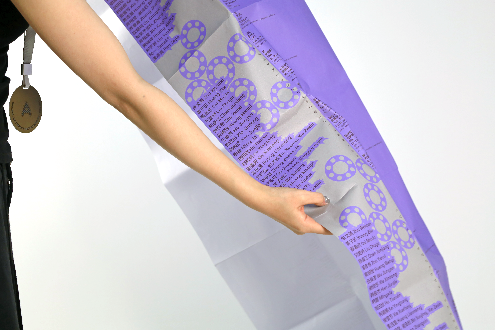
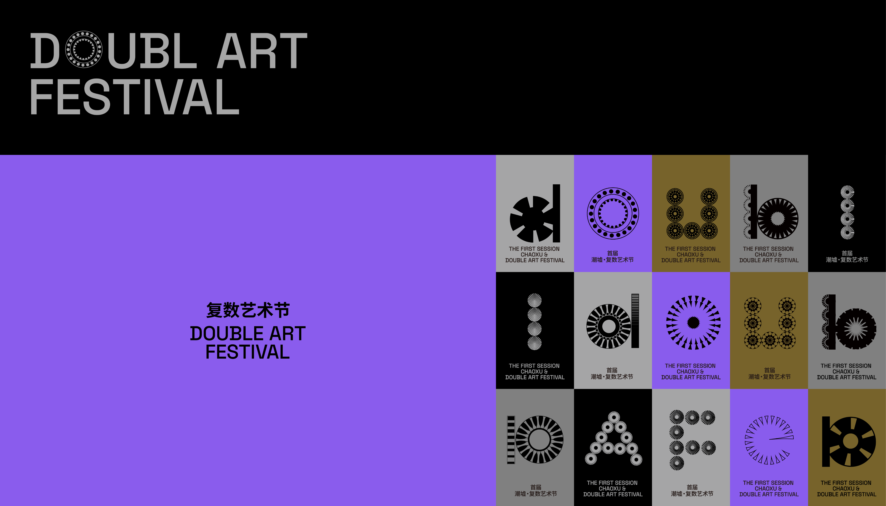
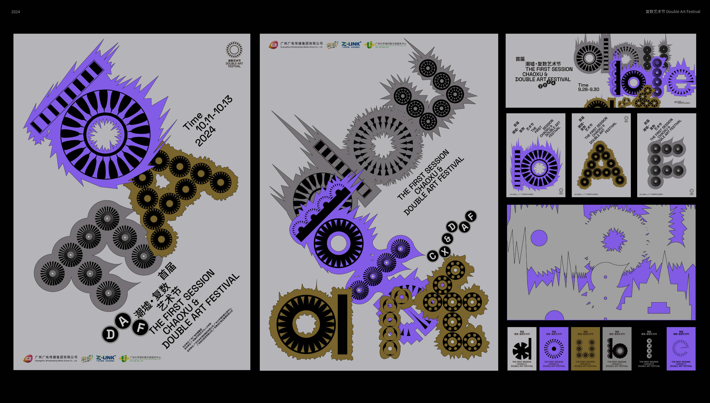
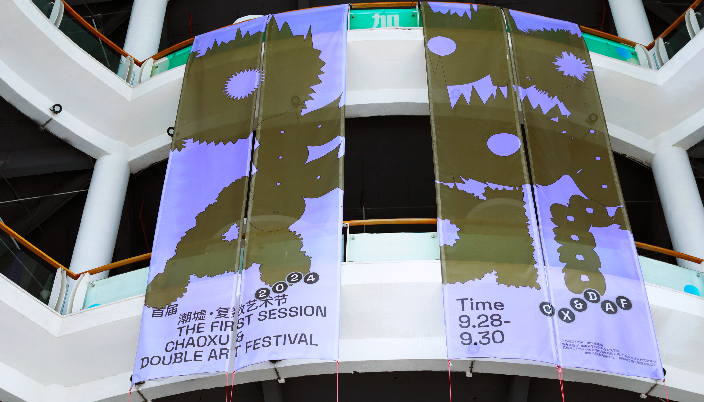
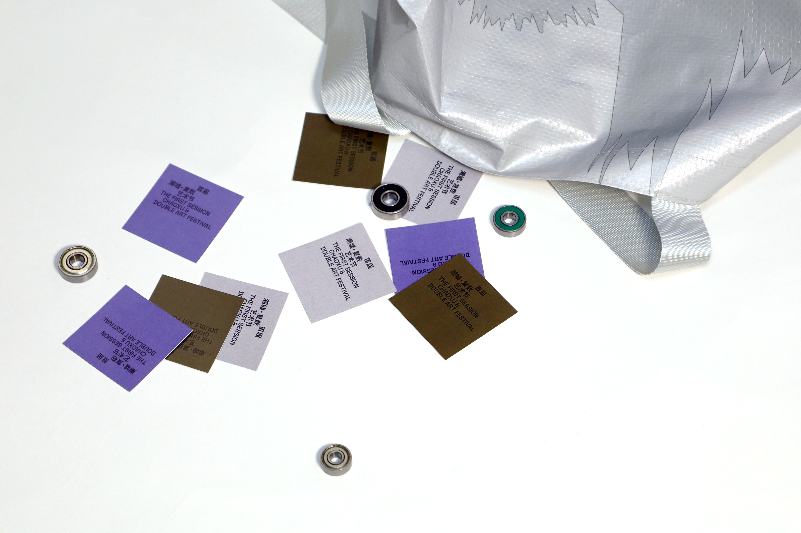
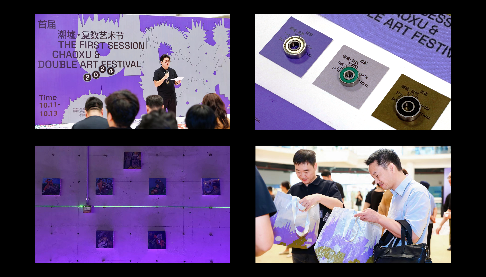
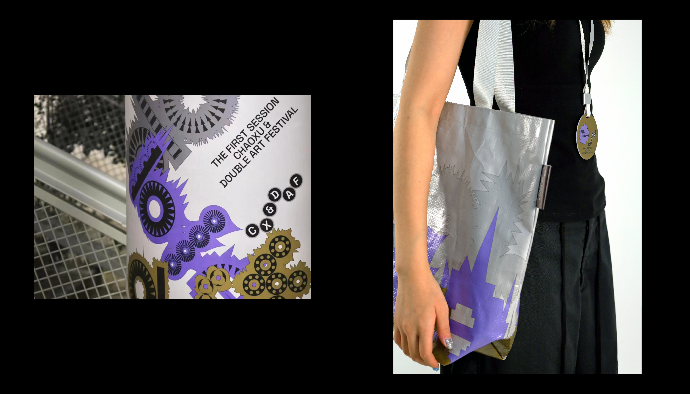

Double Art Festival 复数艺术节
Gears symbolize movement, collaboration and repetition. Gears are single and unique individuals, but when they are interconnected, they can create complex systems. Each special gear represents a unique individual artist. When they interlock and rotate repeatedly, they form a complex yet harmonious artistic world, bursting forth with the boundless power of collective creation. We designed their own gears for three or four artists, hoping to present the unique charm and creativity of the Plural Art Festival through this.
齿轮象征运动，协作与重复。齿轮是单一且独特的个体，但彼此联结却能创造出复杂的系统。每个特殊的齿轮都代表着每一个独特的艺术家个体，当它们相互咬合、重复旋转时，形成了一个复杂而和谐的艺术世界，迸发出集体创造的无穷力量。我们为三四个艺术家设计了属于他们自己的齿轮，希望以此呈现复数艺术节独特的魅力与创造力。
- Category
- Visual Identity
- Designer
- Chen Jiaqi，Hong Yuming
陈家琪，洪雨鸣 - Client
- 广州美术学院
- Year
- 2025






More Works
Otowotto
Θ=1/0
Gene Gallery
Lemaire
Soma APP
Circle
Monosci Font
24-960
A World On Paper
Golden Bell Laureates
Poetics Of Form
8th Annual Conference
Perceptual Bias
Behind The Mask
Natural Walk
Cruise Ship 72 Changes
Wandering Here Dre-
aming There
Grand Tour
META（PHYSICAL）FORM
K2 Track Art Museum
Double Art Festival
Songs Of Laber
Making Inbetween